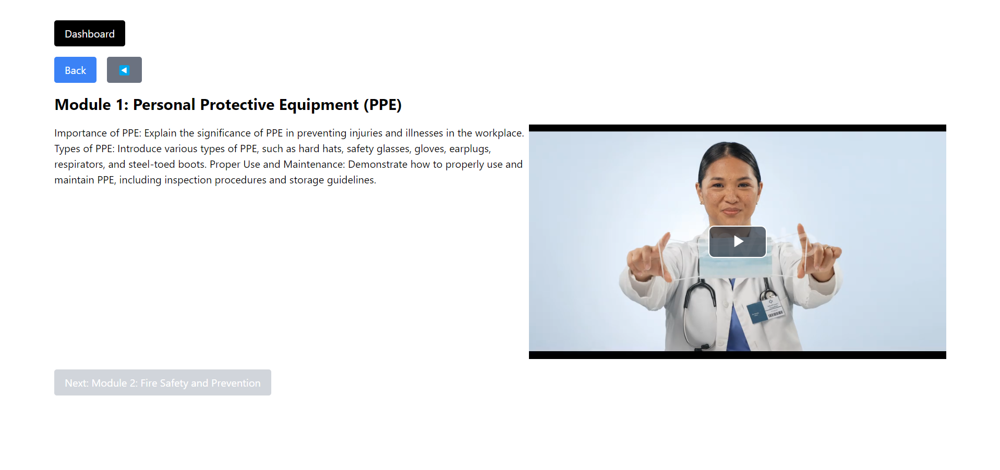
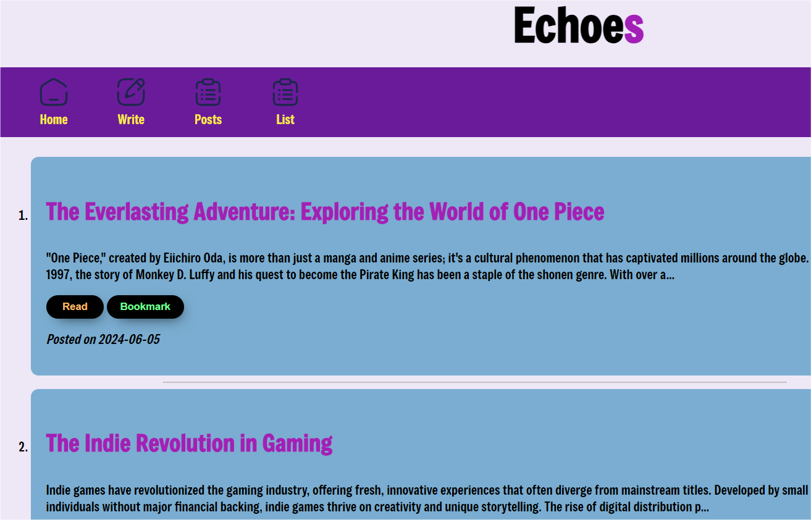
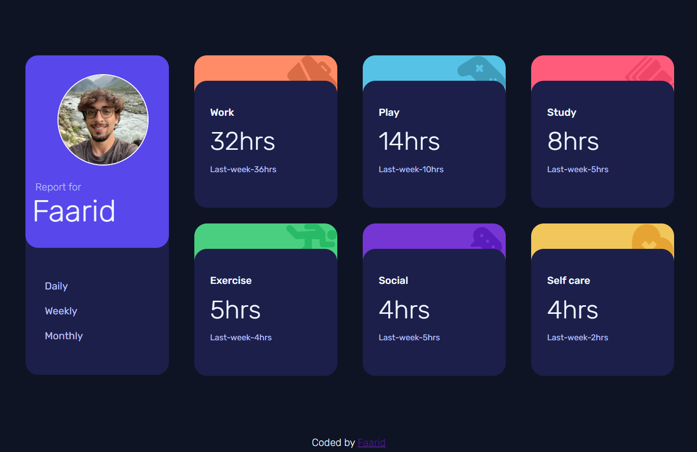
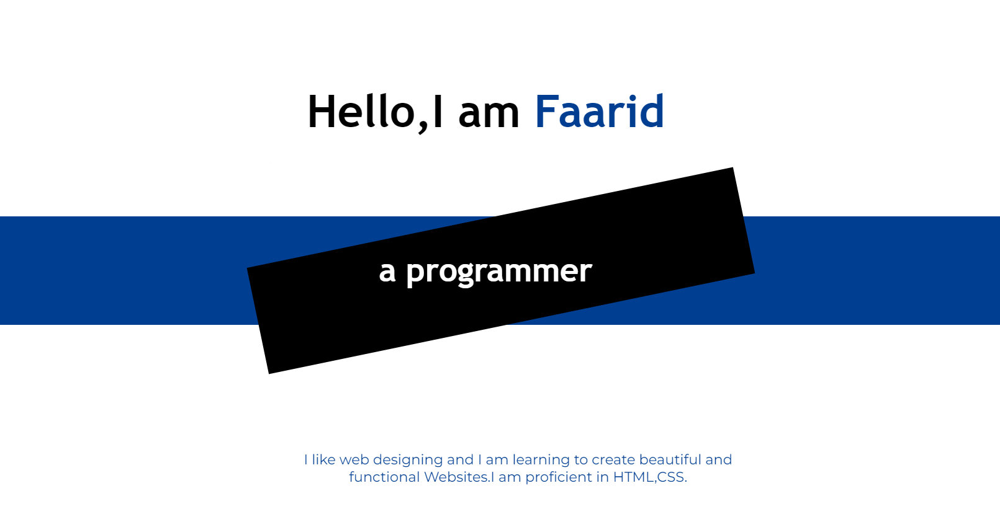
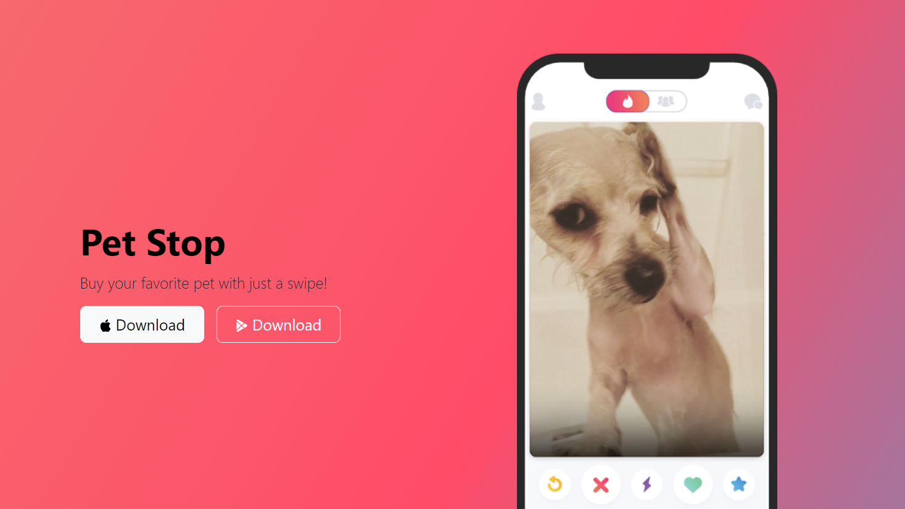
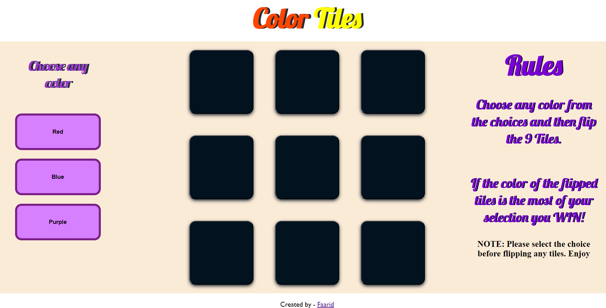

My Projects
HTML/CSS
React.js
Javascript
Node.js
Express.js
PostgreSQL
-
LearnSphere
A training platform for users with sequential video playback.
View Project
Using technologies such as Next.js, Node.js, Express.js, Video.js,PostgreSQL and Tailwind CSS, LearnSphere offers a solid backend structure for handling API calls and DB operations and a simple frontend interface.

-
Echoes-Blogging Website
Echoes is a dynamic and user-friendly blogging website.
View Project
Leveraging technologies such as Node.js, Express.js, and EJS templating, Echoes offers a robust backend structure and a visually appealing frontend interface.Users can easily write,read,bookmark and delete their blog posts with ease.

-
Time Tracker
Interactive Time Tracking Website.
View Project
The Website is made using HTML/CSS and Javascript. The layout is custom made using grid/flexbox and with the help of Fetch API we have used data from the local JSON file.

-
Personal website
Responsive Personal Website.
View Project
The Website is made from scratch and I designed the prototype using Canva. The website is created using HTML,CSS and have used multiple layout features like flexbox,block,inline and the responsiveness is achieved using Media Queries .

-
Web Template for Pet Stop App using Bootstrap
A colorful Web Template for Pet selling App bussiness.
View Project

-
FAQ Accordion
An elegant FAQ Accordion made using HTML,CSS and Javascript.
The functonality is added by toggling classes on event and the source is changed for the respective svg icons.
View Project -
Color Tiles - GAME
A simple tile game made using HTML,CSS and JS with the help of DOM Manipulation and event listeners.
The layout is made using grid,flexbox
Play game!
